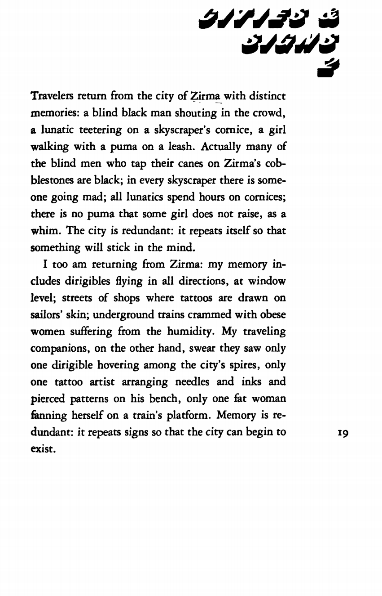
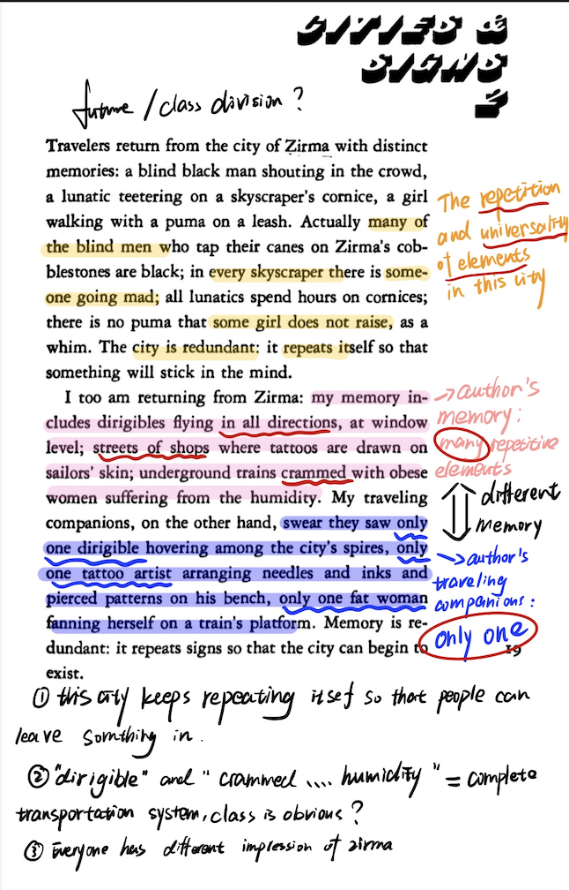
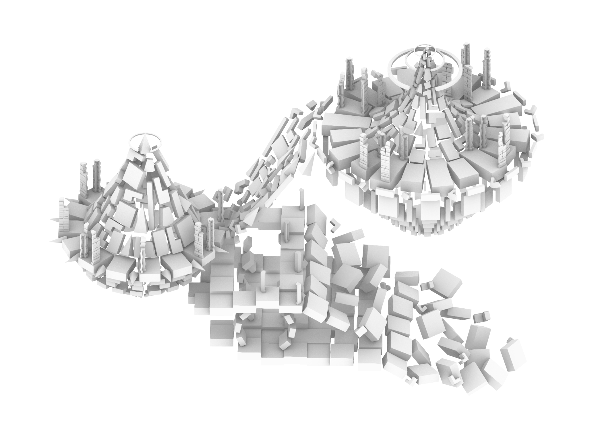
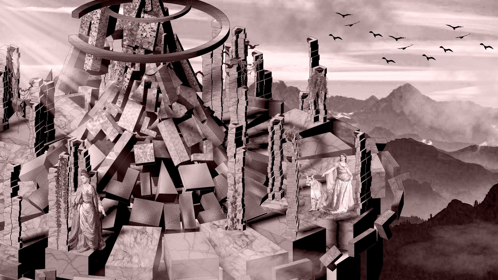
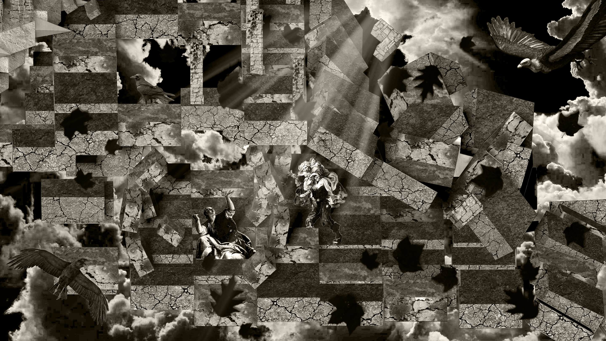
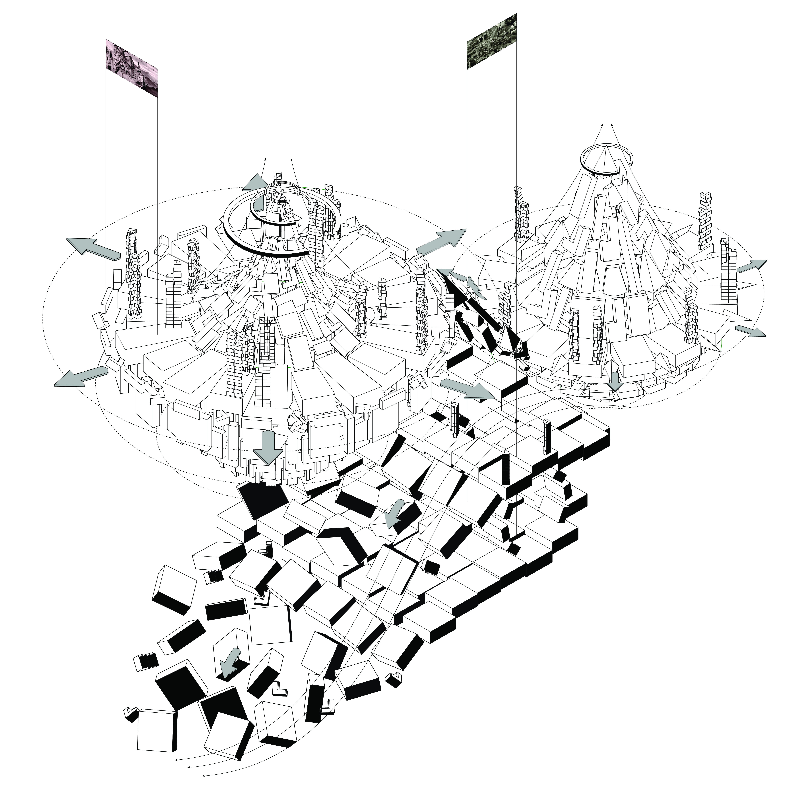

3D MODELING & RENDERING
从文学文本到三维空间 — 3D 建模与渲染创作
根据卡尔维诺《看不见的城市》中 Zirma 城市的文学描述，将其空间意象转译为三维视觉作品。从文字分析中提取空间特征，通过 3D 建模、材质探索与灯光渲染，构建可感知的数字城市景观。






从《Cities & Signs 2 - Zirma》原文中提取关键空间意象：重复的符号、城市的标志与记忆。将文学比喻转化为具体的空间元素。
根据提取的空间元素进行三维建模，构建城市景观的主体结构。从宏观布局到微观细节逐层推进。
探索不同材质和灯光方案，寻找最能传达文本氛围的视觉风格。最终产出多张高质量渲染图。